덕빈권 (빈주/효빈) 대중교통 마스코트
| 빈주도시철도공사 & 코레일 |
빈주 1호선 | 빈주 2호선 | 빈효선 (코레일) |
|---|---|---|---|
 박빛나 박빛나(1호선 및 총괄) |
 김소빈 김소빈(2호선 전담 신입) |
 전노아 전노아(코레일 협력) |
|
| * 빈주도시철도공사(BURC)는 그동안 마스코트 한 명(박빛나)이 전 노선을 전담하는 혹사를 겪었으나, 2026년 4월 김소빈이 합류하며 마침내 2호선 독박에서 벗어났습니다! | |||
- 1. 개요
- 2. 상세 설정
- 2.1. 성격 및 특징 (상대적 정상인, 그러나 은은한 광기)
- 2.2. 학력 및 업무 능력 (인간 신문고)
- 2.3. 외형 및 디자인 (외모 관련 일화)
- 2.4. 취향 (생존형 식단과 취미)
- 3. 목소리 및 성우 연기 (성우 관련 일화)
- 4. 가족 관계 (지옥의 5남매)
- 4.1. 전설의 샌드위치 생존 일화
- 5. 인간 관계 (효빈 ↔ 덕빈 크로스오버)
- 6. 사건 사고 및 재미있는 일화
- 7. 여담 (TMI)
- 8. 미디어 믹스 및 굿즈
1. 개요
"제가요? 1호선 홍보대사요? 아... 네, 열심히 하겠습니다!
야근의 늪에서 허우적대는 빈주의 유일한 빛.
효빈광역시의 영원한 라이벌, 덕빈북도 빈주시의 대중교통을 책임지는 빈주도시철도공사(BURC)의 유일무이한 공식 마스코트다. 2019년에 기획되어 빈주 1호선 개통과 함께 본격적으로 굴려지기 시작했다. 엄밀히 따지면 효빈광역시 캐릭터가 아닌 덕빈권 마스코트지만, 빈효선 광역철도를 통해 두 도시가 묶여있고 각종 합동 행사나 굿즈 사업을 같이 하다 보니 팬들 사이에서는 자연스럽게 효빈메트로 유니버스의 일원으로 취급받는다.
이름의 유래는 빈주시(彬州)의 '빛날 빈(彬)' 자에서 따왔으며, 빈주의 지하를 밝게 비추라는 의미가 담겨 있다. 그러나 정작 빛나 본인의 얼굴에는 짙은 다크서클이 드리워져 있으며, 옆 동네 효빈교통공사가 1호선부터 8호선까지 호선별로 마스코트를 펑펑 뽑아내며 분업(?)을 할 때, 빈주도시철도공사는 극한의 효율과 흑자 경영을 위해 박빛나 단 한 명에게 빈주시의 모든 철도 홍보와 역무 업무를 독박 씌우고 있었다. 다행히 2026년 4월 후배 김소빈이 들어와 2호선은 넘겨주게 되었다.
위아래로 치이는 5남매의 딱 중간 '셋째'로 태어나 20여 년간 단련된 압도적인 눈치와 처세술 덕분에, 악성 민원인 앞에서도 절대 자본주의 미소를 잃지 않는 진정한 사회초년생의 빛이자 생존왕이다. 주변에 워낙 상식을 파괴하는 인물들(기계 덕후, 예산 깡패, 성덕 등)이 많아 효빈/빈주 세계관 내 최고의 '상대적 정상인'으로 불리지만, 매일 쏟아지는 업무 스트레스에 짓눌려 본인도 서서히 나사가 하나씩 빠져가고 있는 중이다. 이쯤 되면 고용노동부에 고발해야 한다.
2. 상세 설정
2.1. 성격 및 특징 (상대적 정상인, 그러나 은은한 광기)
ISFJ(용감한 수호자)의 교과서적인 성격이다. 타인의 감정 변화를 1초 단위로 스캔해 내는 '눈치의 신'이다. 이는 철저히 그녀의 가정환경에서 비롯되었는데, 기 센 첫째 오빠와 잔소리꾼 둘째 언니, 그리고 자기 멋대로인 넷째 여동생과 막내 남동생 사이에서 평생을 '심부름 전담반 겸 샌드백'으로 살아왔기 때문이다. 상대방이 입을 열기도 전에 무엇을 원하는지 파악하고 선제 방어를 치는 스킬이 만렙에 달했다.
덕분에 "기계에 환장하는 공대 너드(임세하)", "통계로 사람 명치 때리는 막내딸(미소하)", "행정 예산 뜯어내는 불도저(전노아)" 등 광기로 가득한 캐릭터 생태계 내에서 거의 유일하게 '상식이 통하는' 일반인 포지션을 담당하고 있다. 효빈시 캐릭터들이 기행을 벌일 때 옆에서 식은땀을 흘리며 수습하는 것은 100% 빛나의 몫이다.
하지만 그렇다고 완벽한 정상은 절대 아니다. 빈주 3개 노선을 혼자 독박 쓰다 보니 만성 수면 부족과 스트레스에 시달리며, 인내심의 한계점(임계점)을 돌파하면 나사가 풀린 듯한 은은한 미친 짓을 시작한다.
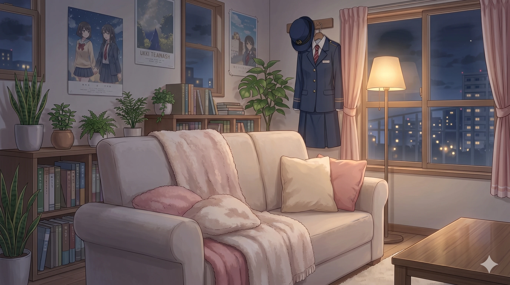
- 고장 난 승차권 발매기를 쓰다듬으며 "너도 힘들지? 나도 힘들어... 우리 같이 사표 쓸래?"라며 기계와 심도 깊은 대화를 나눈다.
- 진상 승객이 소리를 지르면 갑자기 표정을 싹 굳히고 "고객님. 제가 집에서 셋째 동생 패듯이 패드리기 전에 뒤로 물러나세요.^^"라고 맑게 웃으며 협박한다. 눈은 전혀 웃고 있지 않다.
- 허공에 대고 이동식 결제 단말기를 허공에 찍으며 "네, 고객님! 다음 분! 안 됩니다! 돌아가세요!"라며 섀도우 복싱을 하는 모습이 동료들에게 종종 목격된다.
업무상 배임보다 무서운 정신적 배임 상태다.
2.2. 학력 및 업무 능력 (인간 신문고)
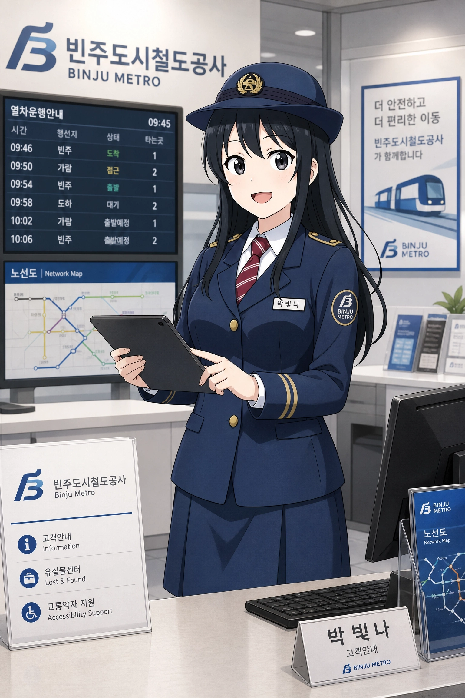
빈주역 고객안내 센터에서의 일상. 태블릿을 들고 완벽한 자본주의 미소로 승객을 응대하고 있지만, 속으로는 구내식당 메뉴와 퇴근 시간만을 계산하고 있는 1년 차 K-직장인의 표본이다.
빈주의 명문 덕북대학교를 우수한 성적으로 졸업하고, 피 터지는 경쟁률을 뚫어 당당히 빈주도시철도공사 공채 역무원으로 입사했다. 하지만 입사 1년 차인 그녀에게 주어진 짐은 상상을 초월한다.
효빈교통공사가 '역무, 기술, 승무' 등으로 캐릭터 롤을 세분화한 것과 달리, 빛나는 혼자서 승강장 통제, 고객센터 전화 응대, 미아 보호, 유실물 관리, 심지어 SNS 홍보물 모델까지 다 뛴다. 그녀는 빈주 1호선은 물론이고, 빈주 2호선, 심지어 코레일 관할인 빈주권광역철도 홍보까지 땜빵을 나가는 지경이다. 물론 2026년 4월 신입 김소빈이 들어오면서 2호선 홍보는 떼어냈지만, 여전히 김소빈의 사고 수습(OJT)을 다니느라 바쁘다. 이 말도 안 되는 업무량 속에서도 단 한 번도 시말서를 쓴 적이 없으니, 사실상 그녀 혼자 빈주도시철도공사의 흑자 경영을 캐리하고 있는 셈이다.
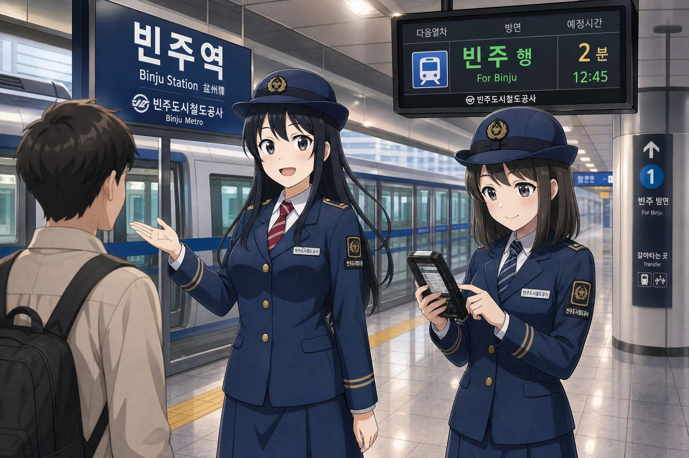
승객에게 친절하게 길을 안내하는 빛나 주임과 옆에서 단말기로 업무를 배우는 신입 김소빈. 7년 만에 드디어 혼자 일하지 않게 된 빛나의 입가에 핀 진실된 미소가 관전 포인트다.
2.3. 외형 및 디자인 (외모 관련 일화)
공식 일러스트는 빈주도시철도공사의 단정하고 보수적인 사풍을 완벽하게 보여준다. 단정하게 세팅된 칠흑 같은 긴 생머리, 그리고 티 없이 맑고 순한 인상을 주는 눈망울이 특징이다. 하지만 자세히 보면 눈 밑에 애써 화장으로 가린 미세한 다크서클이 존재한다. 오타쿠 팬덤은 이 다크서클이 빛나의 '사연 있어 보이는 퇴폐미'를 완성한다며 극찬을 아끼지 않는다.
복장은 짙은 네이비색 블레이저와 H라인 스커트를 기본으로 하며, 붉은색에 하얀 사선이 들어간 스트라이프 넥타이, 무릎 바로 아래까지 오는 까만색 반스타킹(니삭스), 브라운 로퍼를 착용하고 있다. 머리에는 빈주도시철도의 황금색 로고가 박힌 각 잡힌 정모를 쓰고 있어, 전반적으로 "군더더기 없는 신뢰의 역무원" 룩을 완성했다.
✨ 외모 관련 일화: D컵을 가리기 위한 눈물겨운 사투
효빈시청의 한바다처럼 대놓고 육감적인 스타일은 아니지만, 공식 프로필상 B83.5 - W58 - H85 (D컵)라는 아주 알차고 훌륭한 슬림 글래머 체형을 숨기고 있다. '실전 압축형 슬림 글래머'의 표본.
- 특수 수선 유니폼: 빛나는 신입 시절 기본 지급된 유니폼 블레이저의 가슴 단추가 짐을 들 때마다 팽팽하게 벌어져서 민망해지자, 사비(?)를 들여 셔츠와 블레이저 가슴 부분에 신축성 있는 스판덱스 재질을 덧대어 특별 수선을 했다. 누가 옷 핏이 좋다고 칭찬하면 "하하, 며칠 밤을 새웠더니 스트레스성 붓기가 안 빠져서 옷이 꽉 끼네요^^"라고 영혼 없이 대답하며 황급히 화제를 돌린다.
- 효빈 2호선의 경악: 한번은 효빈교통공사의 글래머 담당인 2호선 하루빈과 합동 회의 차 사우나(찜질방)를 같이 간 적이 초반에 있다. 평소 빈주 유니폼의 철저한 봉인력에 속아 빛나를 '마른 체형'으로 알았던 하루빈은, 탈의실에서 빛나의 진짜 피지컬을 목격하고 경악하며 "너... 너 그 체급을 여태 어떻게 그 좁은 블레이저 안에 구겨 넣고 다녔어?!"라고 소리쳐 찜질방 아주머니들의 시선을 한 몸에 받게 만들었다. 빛나는 수치심에 하루빈의 입을 수건으로 틀어막았다.
- 최강의 동안과 다크서클 참사: 26세지만 화장을 지우면 고등학생으로 보일 정도로 동안이다. 한여름 야외 캠페인 도중 땀 때문에 다크서클 컨실러(화장)가 지워진 적이 있는데, 지나가던 시민이 그걸 보고 "아이고... 고등학생 실습생을 얼마나 굴렸으면 애 눈이 저렇게 퀭해..."라며 사장실에 아동 학대(?) 민원을 넣은 전설적인 일화가 있다. 역설적이게도 이 사건 이후 빛나가 쓴다는 해당 브랜드의 컨실러가 '철야 노동자 필수템'으로 입소문을 타며 전국적으로 품절 대란을 일으켰다.
포근한 아이보리 니트와 청바지 차림으로 공원 산책을 나온 모습. 유니폼 속에 감춰져 있던 청순한 비주얼이 폭발한다. 하지만 언제 회사에서 전화가 올지 몰라 폰을 손에서 놓지 못한다.
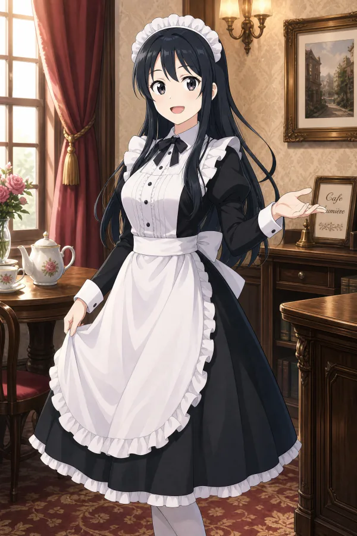
빈주역 자선 찻집 이벤트빈주도시철도공사에서 기획한 일일 자선 찻집의 처절한 희생양. 메이드복을 입고 자본주의 미소로 차를 따르는 모습에 매출은 대폭발했지만 빛나의 멘탈은 바닥을 찍었다.
2.4. 취향 (생존형 식단과 취미)
업무 강도가 워낙 살인적이다 보니, 취향이나 식습관마저 철저하게 '생존과 가성비'에 맞춰져 있다. 감성파인 하루빈이나 박라미가 예쁜 성수동 스타일 카페 투어를 다닐 때, 빛나는 구내식당 식권 남은 장수를 세고 있다.
-
👍 좋아하는 음식: 모카골드 믹스커피 2봉지, 편의점 매콤 핫바
밥 먹을 시간도 부족해서 탕비실에 비치된 믹스커피 2봉지를 종이컵 하나에 진하게 타서 원샷하는 것이 그녀의 모닝 루틴이자 생명 연장 포션이다. 퇴근길에는 무조건 역내 편의점 '매콤 핫바'를 전자레인지에 데워 먹으며 하루의 찌든 스트레스를 푼다. 가끔 성과급이 들어온 날에는 나름 사치를 부린답시고 역 앞 김밥천국에서 '참치김밥에 치즈 추가'를 한다.이 시대 K-직장인의 눈물겨운 플렉스. -
👎 싫어하는 음식: 인스타 감성의 마카롱, 뼈/가시 발라야 하는 음식
극강의 짠순이 본능 탓에 가성비가 떨어지는 음식을 병적으로 극혐한다. 하루빈이 "성수동 스타일 마카롱 하나에 4,000원인데 먹으러 가자!"고 하면, 빛나는 그 자리에서 동공 지진을 일으키며 "4,000원이면 우리 역 앞 김밥천국에서 참치김밥이 한 줄 반이고, 구내식당 식권이 한 장이야."라며 뼛속 깊은 가성비 팩폭을 때려 하루빈의 감성을 파괴한다. 또한, 발라먹기 귀찮은 생선류나 게장 등도 "그거 바를 시간에 1호선 민원 전화 3통은 더 받겠다"며 철저히 기피한다. -
🎮 취미 및 특기: 통장 잔고 확인, 암막 커튼 치고 무소음 수면
평일 내내 시끄러운 환승역 대합실과 지옥의 5남매 소음에 시달리다 보니, 쉬는 날엔 무조건 암막 커튼을 치고 무소음 상태로 침대에 기절해 있는 것을 가장 사랑한다. 이때는 빈주도시철도공사 사장님 전화가 와도 무조건 무음 처리다. 유일하게 능동적인 취미가 있다면 바로 흑자 기업 빈주도시철도공사의 짭짤한 성과급이 찍힌 '통장 잔고 확인'이다. 입꼬리가 씰룩거리는 그녀를 볼 수 있는 유일한 순간이다. 특기로는 전술 병기에 가까운 '결제 단말기 0.5초 퀵드로우'가 있다.
3. 목소리 및 성우 연기 (성우 관련 일화)
평소의 싹싹한 톤과, 스트레스가 극에 달했을 때 터져 나오는 '성우 밈(Meme)'이 박빛나 덕질의 핵심이다.
하트캐치 프리큐어 '큐어 마린', 원신 '푸리나' 역
평소에는 신입사원 특유의 싹싹하고 발랄한 톤을 유지하지만, 야근 오더가 떨어지거나 무리한 지시를 받으면 원신 푸리나 특유의 그 찌질하고 처절한 오열 톤("어째서 나한테만 이러는 거야아아악!!")이 튀어나와 팬들의 가학심(?)을 자극한다.
🎙️ [일화] 빈주 폰타인 생방송 대참사 & 심판관님 드립
빈주도시철도 유튜브 라이브 방송 중, 본사 임원이 채팅창으로 "빛나 주임, 내일 빈효선 홍보 영상 촬영도 자네가 가야겠어"라고 깜짝 지시를 내린 적이 있다. 그 순간 멘탈이 나간 빛나는 다리에 힘이 풀려 주저앉으며 "어째서어어!! 빈주에는 전철역이 20개가 넘는데 왜 홍보대사가 나 하나뿐인 거야아아악!!" 하고 라이브로 엉엉 울어버렸다. 이 완벽한 푸리나 톤의 오열은 순식간에 짤방으로 퍼져나가 '빈주 폰타인 사태'라 불리며 조회수 300만을 찍었다.
이후 악성 민원인이 와서 소리를 지를 때마다, 철덕들이 옆에서 빛나를 감싸며 "심판관님!! 빛나 주임은 무죄입니다!!"라고 소리쳐 민원인을 당황하게 만든다는 웃지 못할 밈이 생겼다.
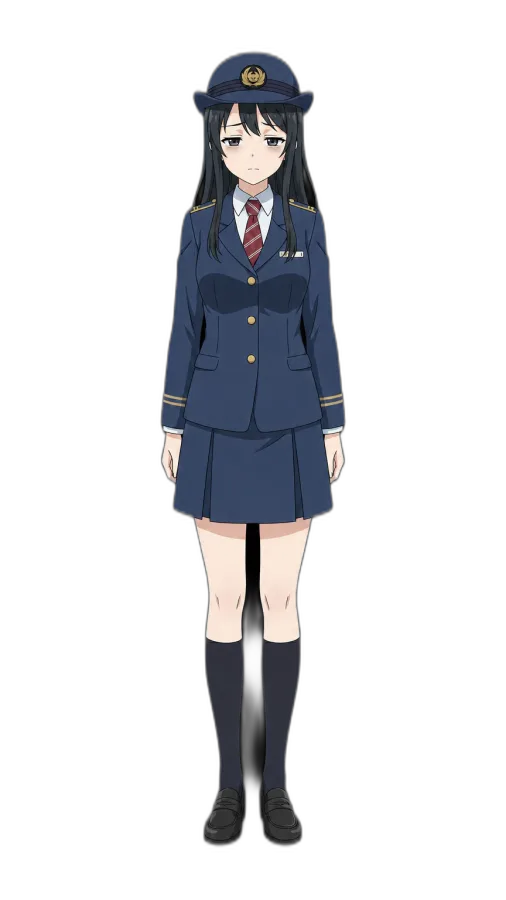
1단계: 영혼 가출 (야근 통보)김철수 사장으로부터 "주말에 코레일 합동 행사도 자네가 가야겠어"라는 말을 들었을 때의 표정. 눈의 하이라이트가 완전히 꺼졌다.
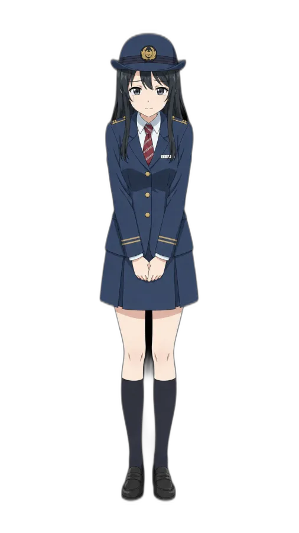
2단계: 빈주 폰타인 사태 (푸리나 모드)결국 멘탈이 붕괴되어 "어째서 나한테만 이러는 거야아아악!!" 하고 라이브로 오열하는 전설의 순간. 철덕들이 '심판관'을 자처하게 만든 마성의 짤이다.
5등분의 신부 '요츠바', 뱅드림 '미타케 란' 역
평소엔 요츠바처럼 "헤헤, 네! 제가 할게요! 맡겨주세요!"라며 무한 긍정의 호구처럼 일을 다 떠맡다가, 한계치에 달해 번아웃이 오면 란처럼 목소리를 지하 3층까지 쫙 깔고 "늘 하던 대로입니다. (체념)"라고 중얼거리는 완벽한 갭 차이를 보여준다.
🎙️ [일화] 아야네루의 진심 어린 한숨
일본 홍보용 라디오 녹음 당시, 빛나의 살인적인 3개 노선 스케줄표를 받아 든 성우 사쿠라 아야네(애칭 아야네루)가 연기가 아니라 진심에서 우러나온 무겁고 처절한 한숨을 내쉬었는데, 그 리얼함이 너무 완벽해서 스태프가 실수(?)로 자르지 않고 그대로 공식 음원으로 써버렸다. 이 리얼한 한숨 소리를 들은 일본 팬덤은 "저건 진짜 직장인의 영혼이 깎여나가는 소리다"며 오사카에서 빈주도시철도공사 본사로 위문품(홍삼, 영양제, 안마기)을 한 트럭 쏟아부었다는 전설적인 사연이 있다.
4. 가족 관계 (지옥의 5남매와 늑골동 토박이 가문)
빈주시 늑골동의 뿌리 깊은 토박이 가문. 부모님과 5남매가 한 지붕 아래 부대끼며 살아가는 이 대가족의 일상은 '약육강식의 정글' 그 자체다. 이 험난한 환경 속에서 빛나의 '초인적인 눈치'와 '생존형 처세술'이 단련되었다.

👨 아버지: 박정만 (Park Jeong-man)
- 집안 싸움에 안 끼어드는 방관의 대가. 명절날 빛나가 수표 받아올 때만 흐뭇하게 웃음.
좌우명: "가지 많은 나무에 바람 잘 날 없다. 그러니 나는 안방으로 대피하련다."
👩 어머니: 김선자 (Kim Seon-ja)
- 5남매 정글의 최종 포식자. 육탄전이 선을 넘으면 고무장갑을 끼고 등판해 서열 정리.
특기: 빛나가 가져온 구내식당 식권을 시장 물물교환용 화폐로 사용하기.
👨 첫째 오빠: 박찬우 (31세)
백수 (토목공학 휴학)
CV: 신용우 / 나카무라 유이치
방구석 잉여 장남. 빛나의 섀도우 복싱 샌드백. 그래도 빛나가 아프면 약국은 다녀옴.
👩 둘째 언니: 박윤나 (28세)
중소기업 대리
CV: 소연 / 히카사 요코
빛나의 화장품/옷 무단 횡령범. 직장 상사 씹을 때만 완벽한 소울 메이트.
👧 넷째 여동생: 박이나 (21세)
덕북대 서양화과
CV: 김연우 / 미나세 이노리
물감 난장판 악마. 재료비 핑계로 빛나의 성과급을 털어가는 가계 적자 주범.
👦 막내 남동생: 박지우 (16세)
빈주중학교 롤 골드 랭커
CV: 이경태 / 야마시타 다이키
빛나의 수면 방해 주범. 결제 단말기로 16연타 맞을 뻔한 잼민이 대장.
4.1. 전설의 샌드위치 생존 일화
📺 리모컨 쟁탈전 대첩
오빠는 스포츠 채널, 언니는 드라마, 여동생은 예능, 남동생은 게임 방송을 보겠다고 거실에서 4자간 난투극이 벌어졌을 때, 셋째 빛나가 조용히 다가가 두꺼비집을 쿨하게 내려버리고 "다 같이 스마트폰이나 봐. 공용 전기는 내 거야."라고 서늘하게 선언하여 단숨에 서열 1위를 증명한 사건. 이때 뿜어낸 살벌한 아우라가 훗날 빈주도시철도 진상 제압의 밑거름이 되었다. 이때 첫째 오빠가 진짜로 주먹 다짐할 기세로 덤볐으나 눈빛에 밀려 버로우했다.
🧹 명절 전 대청소 독박 사건
부모님이 시골에 가신 사이, 첫째와 둘째는 약속 핑계로 도망가고, 넷째와 막내는 방에 틀어박힌 명절 전야. 빛나 혼자 고무장갑을 끼고 거실, 주방, 화장실을 호텔급으로 완벽하게 세팅해 냈다. 돌아온 부모님이 감동하여 빛나에게만 5만 원짜리 수표를 하사하자, 다른 남매들이 "치사하게 혼자 받냐"며 불만을 터트렸다. 그러나 빛나의 "그럼 다음엔 니들이 화장실 곰팡이를 칫솔로 닦든가"라는 묵직한 한마디에 일동 버로우했다.
🍖 월급날 하이에나 사태
빛나가 월급을 탄 날, 어떻게 귀신같이 알았는지 오빠는 치킨을, 언니는 화장품을, 동생들은 피자를 사달라며 4방향에서 하이에나처럼 몰려들었다. 빛나는 조용히 지갑에서 구내식당 식권 4장을 꺼내 던져주며 "가서 밥이나 먹어"라고 응수했다. 피도 눈물도 없는 생존형 K-직장인.
5. 인간 관계 (효빈 ↔ 덕빈 크로스오버)
- 김소빈 (빈주 2호선): 7년 만에 얻은 눈에 넣어도 아프지 않을(?) 직속 후배. 2026년 4월 소빈이 처음 입사했을 때 빛나는 탕비실에서 감격의 오열을 터뜨렸다고 한다. 하지만 소빈 특유의 '맑은 눈의 광인' 기질 때문에 진상 민원인이나 사장님에게 해맑게 팩폭을 날릴 때마다 빛나의 수명이 깎여나가고 있다. 지금은 2호선 업무를 인수인계(OJT) 한다는 명목으로 소빈이 대형 사고를 치기 전에 입을 틀어막으러 뛰어다니느라 여전히 바쁘다. 일명 '소빈이의 애착 선배'.
- 전노아 (코레일 빈효선): 빈주와 효빈을 잇는 광역철도의 상징인 만큼, 두 사람은 업무상 가장 자주 마주친다. 극강의 ENFJ 관종 인싸인 노아가 "빛나 언니! 오늘 홍보 영상 제가 기획했어요! 같이 춤춰요!"라며 질질 끌고 다니면, 기가 쪽쪽 빨린 ISFJ 빛나는 영혼 없는 눈빛으로 삐그덕대며 로봇 춤을 춘다. 하지만 노아의 그 불도저 같은 행정 기획력 덕분에 BURC의 빡빡한 예산을 합법적으로 지원받은 적이 많아, 내심 노아를 "빛노아 님"이라고 부르며 의지한다.
- 고나미 (효빈 1호선): 옆 동네의 하늘 같은 대리님이자 FM 원칙주의자. 빈주 1호선과 효빈 1호선 합동 캠페인 때 처음 만났다. 나미의 완벽주의적인 성향과 살벌한 "특별 교육"을 보고 빛나는 덜덜 떨었으나, 워낙 빛나가 눈치껏 빠릿빠릿하게 일을 처리해내자 고나미가 "BURC에는 저런 훌륭한 인재가 혼자 다 구르고 있군. 매일 뺀질거리는 우리 2호선(하루빈)이랑 바꿨으면 좋겠다."라고 극찬을 아끼지 않았다.
-
한바다 (효빈시청): 동갑내기(00년생) 공기업/공무원 친구. HAF 행사나 합동 회의 때 자주 만난다. 바다가 킹블레이드를 흔들며 미친 텐션을 뽐낼 때마다, 옆에서 조용히 생수병과 수건을 건네주며 기를 빨려 한다.
바다가 숨 쉴 때마다 G컵의 흉부 장갑 때문에 가슴 단추가 터질 것 같으면 말없이 자기 수첩에서 옷핀을 꺼내 건네주는 매우 자상한 친구다. - 하루빈 (효빈 2호선): 가장 부러워하면서도 질투하는 대상. 하루빈은 월급루팡 짓을 하며 농땡이를 쳐도 커버해 줄 동료(1~8호선 식구들)가 넘쳐나지만, 빛나는 본인이 농땡이를 치는 순간 빈주 지하철 마케팅 전체가 올스톱되기 때문이다. 하루빈이 "야야, 이렇게 사각지대에 숨어서 쉬는 거야~"라고 가르쳐주면, 빛나도 따라 해보지만 "박 주임! 어디 갔어!"라는 사장님의 호출에 3초 만에 발각당해 질질 끌려간다. "너희 회사는 일할 사람 많아서 좋겠다..."라며 진심으로 부러워한다.
5.1. 사장실의 빌런, 김철수 사장과의 관계
빈주도시철도공사(BURC)의 김철수 사장은 빛나에게 있어 은인이자 철천지원수다. 빈주도시철도의 알짜 흑자 경영은 전적으로 빛나를 3인분 치로 갈아 넣어서 달성한 것이기 때문.
- 최고의 칭찬과 최악의 보상: 김 사장은 입만 열면 "우리 빛나 주임이 BURC의 보배지!", "빛나 주임 없으면 우리 공사 문 닫아~"라며 극찬을 아끼지 않는다. 하지만 정작 빛나가 "그럼 제발 신입 좀 뽑아주세요. 저 죽을 것 같아요."라고 호소하면, 김 사장은 능구렁이처럼 "에이~ 빛나 주임 일당백인데 누굴 더 뽑아? 오늘 저녁에 내가 한우 쏠게!"라며 법인카드로 입을 막아버린다.
전형적인 블랙 기업 악덕 사장의 표본. - 소고기 결계: 빛나는 사장님을 원망하며 사표를 품에 품고 출근하지만, 퇴근길에 김 사장이 사주는 최고급 한우 투뿔(1++등급) 꽃등심을 입에 넣는 순간 '그래... 이 맛에 노예 한다...'라며 다음 날 다시 제복을 주워 입는 악순환에 빠져있다. 자본주의와 마블링의 노예가 되어버렸다.
- 데스노트 작성: 매일 밤 빛나의 다이어리에는 '김철수 사장님 대머리 돼라', '내일 사장님 차 타이어 펑크 나게 해주세요' 같은 저주 섞인 일기가 빼곡하게 적혀 있다는 전설이 있다. 물론 회사에서는 철저한 자본주의 미소로 "네, 사장님! 사랑합니다!"를 외친다.
5.2. 고유현 4대 사장과의 관계 (2D 최애캐의 3D 구현 제물)
새로 취임한 제4대 고유현 사장과의 관계. 김철수 전 사장이 '가성비'로 굴렸다면, 고유현 사장은 '진성 오타쿠의 깐깐한 심미안'으로 굴린다.
고 사장에게 2D 캐릭터 '박빛나'는 영혼의 안식처지만, 현실의 3D 박빛나 주임은 그저 '최애캐를 현실에 완벽하게 구현해내기 위한 외주 제작사 직원(노예)'에 불과하다. 5남매 중 셋째로 자라나며 '눈치의 신'으로 단련된 빛나 주임은 고유현 사장의 발소리만 들어도 어젯밤 사장님이 무슨 애니메이션을 보고 왔는지 파악할 정도가 되었지만, 물리적인 업무량 폭탄 앞에서는 속수무책이다.
- 병 주고 약 주기 (덕업일치): 이렇게 가혹하게 굴리지만 사실 고유현 사장은 공사 내에서 빛나를 가장 아낀다. 야근 후에는 사비로 구한 일본 직구 한정판 블루레이(특히 뱅드림)를 최고 포상이라며 하사한다. 숨겨진 오타쿠 기질이 있던 빛나는 이 희귀 굿즈들에 진심으로 감동하지만, "사장님... 굿즈 주시는 건 압도적으로 감사한데요... 제발 굿즈 대신 칼퇴를 주시면 안 될까요...?"라며 오열하는 모순적인 상황이 매일 연출된다.
당연히 고 사장은 "오, 블루레이 맘에 들어? 그럼 내일은 러브라이브 굿즈 감수 야근이다!"라며 상큼하게 씹어버린다. - 김소빈과의 환장의 똥꼬쇼: 사장님의 '러브라이브 스피리추얼 방어전'에 멘탈이 완벽히 털려버린 후배 김소빈 주임과 함께 사장실 문 앞만 가면 브금 환청을 들으며 부둥켜안고 우는 환상의 전우애(?) 삼각구도가 완성되었다.
6. 사건 사고 및 재미있는 일화
💥 전설의 '단추 발사' 스크린도어 타격 사건
혼잡한 출근 시간대, 닫히려는 스크린도어 사이로 무리하게 타려는 승객을 막기 위해 빛나가 양팔을 벌려 막아선 순간, 가슴의 압력을 버티지 못한 제복 셔츠의 단추 하나가 '투타탕!' 하는 소리와 함께 튕겨져 나가 스크린도어 유리에 직격하는 사고가 발생했다. 단추가 날아간 속도가 흡사 총알과 같아 승객이 식겁해서 뒤로 물러났고, 빛나는 수치심에 얼굴이 새빨개진 채 양팔로 가슴을 가리고 도망쳤다. 이 사건 이후 그녀의 유니폼 상의에 강력한 스판덱스 특수 수선이 필수가 되었다.
📊 건강검진 '과체중' 오진의 진실
사내 건강검진 당시, 몸무게 대비 허리가 너무 가늘어 인바디 기계가 빛나의 체형을 제대로 인식하지 못하고 가슴과 골반의 무게를 복부 비만으로 착각해 일시적으로 '과체중(복부비만 위험)'이라는 충격적인 결과지를 뱉어낸 적이 있다. 평소 밥도 제대로 못 먹고 일하는 빛나가 복부 비만이라는 결과에 놀란 인사팀이 특별 면담까지 잡았으나, 억울했던 빛나가 보건소에 가서 수동으로 측정한 '신체 치수 증명서'를 제출하고 나서야 기계의 오류임이 증명되었다. 이때 인사팀 직원은 증명서의 B83.5 수치를 보고 아무 말 없이 고개를 숙여 사과했다고 한다.
🦺 소방 훈련 '구명조끼 봉인 해제' 참사
빈주소방서와 합동으로 진행된 수해 대비 지하철 대피 훈련 중 일어난 참사. 공사에 비치된 여성용 표준 구명조끼를 입으려던 빛나가 지퍼를 끝까지 올리지 못해 끙끙대자, 옆에 있던 소방관이 "주임님, 장난치지 마시고 꽉 조여 매세요!"라며 강제로 지퍼를 확 올렸다. 그 순간 억눌려 있던 흉부 장갑의 볼륨감이 그대로 튀어나오면서 구명조끼의 지퍼가 산산조각 나며 터져버렸다. 현장에 있던 수십 명의 소방관과 직원들이 일순간 정적에 휩싸였고, 결국 빛나는 남성용 특대형 조끼를 입고 훈련에 임해야 했다. 이후 빈주역의 구명조끼는 전부 넉넉한 프리사이즈로 교체되었다.
📖 캐릭터 설정집 500매 강제 집필 사건
고유현 사장 취임 첫 달, 캐릭터 박빛나의 세계관이 너무 얕다며 3D 박빛나 주임에게 "원고지 500매 분량으로 박빛나의 유년 시절부터 현재까지의 서사를 라이트노벨 스타일로 써와라"라는 광기 어린 업무 지시를 내렸다. 거절을 못 하는 ISFJ 빛나는 결국 3일 밤을 새워 눈물 젖은 세계관 설정집을 써냈고, 이를 읽은 고 사장은 감동의 눈물을 흘렸다고 한다. 대체 공기업 역무원에게 뭘 시키는 거야
👗 신규 굿즈 코스프레 의상 강제 피팅 사건
신규 굿즈로 발매할 캐릭터 코스프레 의상 샘플이 나오자, 고 사장은 옷의 주름과 실루엣을 3D로 확인해야 한다며 실제 박빛나 주임에게 옷을 강제로 입혀놓고 사장실을 한 바퀴 돌게 만들었다. 수치심에 얼굴이 토마토처럼 달아오른 빛나에게 "치맛자락의 펄럭임이 부족하다"며 진지하게 피드백을 남긴 사장님의 광기는 BURC 전설로 남았다.
😡 사장님 과거사에 극대노한 빛나 (ISFJ의 마왕 각성)
고유현 사장이 회식 자리에서 과거 자신과 가족을 끔찍하게 괴롭혔던 악질 일진 5인방의 이야기를 담담하게 털어놓자, 평소 억울한 일을 당해도 속으로만 삼키던 소심한 빛나가 갑자기 테이블을 쾅 내리치며 극대노한 사건이다. 눈이 뒤집힌 빛나는 술잔을 깨부술 기세로 "그 구부석인지 봉석대인지 하는 인간 쓰레기들 지금 당장 어디 있습니까! 제가 공사 법무팀 전원 끌고 가서 명예훼손이랑 특수폭행으로 교도소에 썩어 들어가게 고소장 쓰겠습니다!"라며 사장실이 떠나가라 길길이 날뛰었다. 평소의 유약한 ISFJ 모습은 온데간데없고 마왕처럼 분노하는 빛나의 기세에 오히려 고유현 사장이 "야, 야, 진정해! 나 이미 다 갚아줬어!"라며 식겁해서 말려야 했다고 한다. 빛나 주임 건드리면 좆되는 이유가 있었다
⚖️ 악질 5인방 시위 참교육과 자비 없는 금융치료 (고유현 체제)
과거 김철수 사장 시절의 우상숭배 난동에 이어, 이번에는 고유현 사장의 원수인 동네 양아치 5인방(구부석 등)과 악성 민원인이 합세해 빈주역 박빛나 굿즈샵 앞에서 "세금 낭비 2D 쪼가리 치워라!"라며 난동과 농성을 벌인 사건이다. 오타쿠와 시민들의 맞춤형 물리적 참교육으로 이들이 전원 연행된 후, 박빛나 주임이 직접 이끄는 공사 법무팀이 등판했다. 빛나는 이들 5인방에게 자비 없는 막대한 영업 손실 손해배상 청구와 명예훼손 고소 폭탄을 문자 그대로 쏟아부어 버렸고, 막대한 벌금과 배상금을 물어내지 못한 5인방은 전원 신용불량자 노역장 신세로 전락했다.
🗳️ 전설의 '빛나의 저주' (시의회와의 악연)
2019년 박빛나 캐릭터가 최초로 기획되어 도입될 당시, 빈주시의 꽉 막힌 보수 성향 꼰대 시의원들은 "예산 낭비다!", "어디 신성한 공기업에 만화 쪼가리를 걸어놓냐", "애들 공부에 안 좋고 버릇 나빠진다!"라는 기상천외한 헛소리를 늘어놓으며 격렬하게 반대했다.
그러나 놀랍게도 2022년 제8회 지방선거에서 빛나 도입을 반대했던 의원들의 절반 이상이 낙선하며 쓸려나가는 대참사(?)가 발생했다. 그리고 마침내 2026년 제9회 지방선거가 끝나고 1개월이 지난 현재, 당시 턱걸이로 살아남아 끝까지 반대하던 의원들의 운명도 극명하게 갈렸다. 그중 절반은 민심과 자본주의(?)의 매운맛을 깨닫고 철저히 현실과 타협하여 "박빛나 애니메이션화 예산 전폭 지원!"을 외치며 노선을 갈아탔고, 심지어 몇몇 의원은 굿즈샵 오픈런을 뛰다가 카메라에 포착되는 등 아예 진성 오타쿠로 개심(?)해버렸다. 반면 끝까지 똥고집을 부리던 나머지 절반의 반대파 의원들은 시민들의 자비 없는 심판을 받아 전원 처참하게 낙선하며 짐을 쌌다. 덕분에 빈주 정가와 철덕들 사이에서는 "빛나 주임을 건드리면 3대가 멸한다"는 이른바 '빛나의 저주' 밈이 완벽한 정설로 굳어졌다. 빛나가 단말기로 데스노트를 썼다는 게 학계의 정설.
🚫 우상숭배 난동 사건과 '금융치료'
한번은 일부 극우 성향의 광신도 단체 회원들이 빈주역 대합실에 설치된 박빛나 대형 등신대 앞에 몰려와 "이런 가짜 우상을 숭배하지 마라!", "옷차림이 더럽고 불건전하다!"라며 피켓을 들고 난동을 부리며 심지어 등신대에 붉은 페인트를 투척하려 한 적이 있다.
이에 평소 빛나를 '우리 동네 딸내미'처럼 여기던 일반 시민들과 새벽부터 굿즈 사러 줄을 서 있던 오타쿠 연합군(?)이 대격노하여 바리케이드를 치고 맞섰다. 시민들은 "니들 속이 더 더럽다!", "평생 빈주 지하철 독박 쓰는 우리 빛나 주임한테 무슨 짓이냐! 빛나 주임 쓰러지면 니들이 표 팔 거냐!"라며 분노의 일갈을 날렸고, 건장한 철덕들이 스크럼을 짜서 이들을 밖으로 물리적으로 밀어내 버렸다.
가장 압권은 빈주도시철도공사의 대처였다. 평소엔 짠돌이 블랙기업 사장 같던 김철수 전 사장이 이 보고를 받자마자 "감히 우리 공사의 황금알을 낳는 거위이자 소중한 직원(?)을 모욕해?! 내 흑자 경영에 스크래치를 내?!"라며 이례적으로 극대노했다. 그는 곧바로 공사 법무팀 에이스들을 총동원하여 해당 단체를 상대로 수천만 원대 영업방해 손해배상 청구 및 명예훼손, 재물손괴 미수 혐의로 형사 고발이라는 자비 없는 철퇴(금융치료)를 내려버렸다. 시위 주동자들의 통장과 월급이 가압류되는 끔찍한 금융치료 후기가 전해지며, 이 사건으로 김철수 전 사장은 오타쿠들에게 일주일간 '빛철수', '대철수'라 불리며 열렬한 찬양을 받았다.
🛡️ 윤대환계 테러 미수와 '시민 방어막(휴먼 실드)'
효빈시의 전 적폐 시장인 '윤대환' 계열의 정치 깡패/극성 지지자들이 효빈메트로 캐릭터들의 인기에 배가 아팠는지, 타겟을 만만한(?) 빈주시로 돌려 빈주역의 박빛나 홍보 패널에 락카 스프레이로 테러를 가하려 한 사건이다.
하지만 락카를 꺼내기도 전에 이를 목격한 빈주시민들과 철도 동호인들이 "어디서 남의 동네 적폐들이 넘어와서 행패냐!"라며 빛나의 패널 앞을 육탄으로 가로막는 '휴먼 실드(Human Shield)'를 시전했다. 결국 테러범들은 시민들의 압도적인 기세에 눌려 락카를 떨어뜨리고 도주했으며, 이 일화는 박빛나가 대중교통 마스코트를 넘어 덕빈권 시민들의 절대적인 보호를 받는 성역임을 증명한 감동적인 전설로 남았다.
💳 이동식 결제 단말기 퀵드로우 (건카타)
일러스트에서 들고 있는 회색 단말기는 단순한 소품이 아니라 그녀의 '전술 병기'다. 출퇴근 시간대 개찰구에 교통카드 오류로 멈춰 서서 욕을 하는 진상 승객이 나타나면, 0.5초 만에 허리춤에서 단말기를 뽑아들고 다가가 "태그 되셨습니다. 다음 분~"을 외치며 상황을 종료시킨다. 그 속도와 정확성이 마치 헐리우드 서부극의 총잡이(건슬링어)를 방불케 하여 철덕들 사이에서는 '단말기 퀵드로우' 혹은 '건카타'라 불린다. 한번은 배터리가 방전된 묵직한 단말기 모서리로 진상의 가슴팍을 꾹 찔러 물리적으로 밀어냈다는 흉흉한 괴담도 있다.
🏃♀️ 3단 분신술 환복쇼 (3노선 독박의 저주)
캐릭터가 본인 하나뿐이라 생기는 끔찍한 비극. 오전에는 빈주 1호선 제복을 입고 테이프 커팅식을 하고, 오후에는 보라색 모자로 급하게 갈아입고 빈주 2호선 안전 캠페인 포스터를 찍으며, 저녁에는 코레일 조끼를 걸치고 빈효선 환승 홍보 유튜브 라이브를 켜야 한다.
결국 하루에 옷을 세 번 갈아입다 참다못한 빛나가 라이브 도중 멘탈이 나가 "저 그냥 짬짜면처럼 세 가지 색깔 다 섞인 누더기 옷 하나로 기워 입으면 안 돼요...?"라고 울먹이는 장면이 짤방으로 대유행했다.
※ 2026년 4월, 다행히 2호선 전담 후배 김소빈이 합류하면서 마침내 보라색 제복을 벗고 '2단 분신술' 정도로 업무가 줄어들었다.
💬 사내 메신저 오타 대참사
금요일 저녁 8시, 드디어 야근을 마치고 본사 단체 톡방에 "수고하셨습니다. 먼저 퇴근해보겠습니다."라고 쳐야 할 것을, 졸음과 스트레스에 손가락이 꼬여 "살려주세요. 먼저 퇴근해보겠습니다."라고 전송해 버렸다. 1분 만에 사장님을 포함한 전 직원이 "박 주임 어디 갇혔어!?", "경찰 불러!!"라며 난리가 났고, 결국 빛나는 지하철을 타다 말고 다시 회사로 돌아와 해명 경위서를 써야 했다.
7. 여담 (TMI)
-
작명의 근본 (History of Name):
박빛나라는 이름은 빈주도시철도공사(BURC) 사내 작명위원회(홍보팀 3명, 인사팀 2명, 사장님의 지인 1명)가 3박 4일간의 철야 끝에 완성한 결과물이다. 단순히 예쁜 이름을 넘어 빈주의 역사적 정통성을 관통하는 설정이 깃들어 있다.
- 성씨(朴): 빈주 지역은 역사적으로 밀양 박씨의 분파인 '빈주 박씨'가 지역 토착 세력으로서 뿌리를 내린 고장이다. 공사는 마스코트의 신뢰도를 높이기 위해, 빈주 지역의 뼈대 있는 가문인 '빈주 박씨' 설정을 공식화하여, 그녀를 '빈주를 지키는 뿌리 깊은 가문의 딸'로 정의했다.
- 이름(빛나): 한자어 '빛날 빈(彬)'에서 음을 차용했으나, 핵심은 빈주의 순우리말 지명인 '빛난골'이다. 광주광역시가 이미 '빛고을'이라는 명칭을 선점하여 사용하고 있기에, 빈주 시민들의 지역 정체성을 수호하겠다는 의지로 '빛난골'이라는 단어를 사수했다. 즉, '빛난골(빈주)을 가장 찬란하게 비추는 빈주 박씨 가문의 셋째 딸'이라는, 지나치게 거창한 서사가 탄생했다.
물론 정작 본인은 "그냥 적당히 평범한 이름으로 하지, 왜 이렇게 거창해서 명절 때마다 친척들한테 이름 뜻 설명해야 하냐"며 기획팀을 원망한다.
-
피겨 스케이팅 선수 박빛나와의 동명이인 대참사:
포털 사이트에 '박빛나'를 검색하면 2000년대 대한민국 피겨 스케이팅의 황금기를 이끌었던 전설적인 피겨 선수 박빛나의 정보가 최상단에 뜨는 것은 당연한 이치다. 이 때문에 빙상 스포츠 팬들이 선수님의 우아한 연기 영상을 찾아 들어왔다가, 지하철 승강장에서 믹스커피를 원샷하며 퀭한 눈으로 진상 민원인을 상대하는 2D 캐릭터를 발견하고는 "뭐야 이 퀭한 표정의 역무원은?"이라며 당황하는 해프닝이 매달 반복된다.
하지만 이 해프닝은 의외의 '입덕 루트'가 되었다. "피겨 선수 박빛나를 찾았는데, 왜 이 지하철 마스코트가 더 눈에 띄지?"라며 예쁘장한 외모에 낚여 문서를 클릭했다가,
현실 자각 타임이 오는뼈 때리는 회사 생활과 5남매 샌드위치 서사를 읽고는 역으로 '입덕'해버리는 이른바 '피겨 검색 환승 입덕' 사례가 속출하고 있다. 빛나는 이에 대해 "빙판 위의 예술은 선수님이 하시니까, 저는 승강장의 예술(칼퇴)을 위해 달릴게요..."라고 씁쓸한 농담을 던지는데, 팬들은 "차라리 빙판에서 스케이트나 타지, 왜 지하철에서 단말기를 휘두르고 있냐"며 안타까워한다. -
전술적 유니폼 개조 & 믹스커피 주입식 에너지:
공식 지급 유니폼은 보수적인 공기업 사풍 때문에 폼이 넉넉하지만, 빛나의 체형(B83.5-W58-H85)을 고려하지 않은 탓에 입사 초기 단추가 튕겨 나가는 사고가 빈번했다. 결국 빛나는 사비로 양복 수선집에 달려가 셔츠 안쪽에 '신축성 강화 스판덱스 패널'을 덧대어 유니폼을 '전술적'으로 개조했다. 누가 "오늘따라 옷태가 산다"고 하면 "아, 이건 스트레스성 붓기라 꽉 끼는 거니 말 걸지 마세요."라며 철벽을 친다.
또한 믹스커피 2봉지를 종이컵 하나에 녹여 원샷하는 '주입식 에너지' 섭취법은 빈주도시철도공사 신입사원 교육 때 반드시 시청해야 하는 '생존 영상'으로 지정되어 있다.
-
"퇴근시켜줘..." 밈의 진실 & 사내 CCTV의 비밀:
공식 일러스트 속의 박빛나는 해맑게 웃고 있지만, 네티즌들이 합성한 "제발 퇴근시켜줘..." 짤방은 원본보다 100배는 더 유명해졌다. 심지어 뉴스 자료화면으로 나가고 특별 포상 휴가를 받았으나, 그 3일 내내 암막 커튼을 치고 물 한 모금 안 마신 채 기절해 있었다는 점이 팬들에게 가장 큰 공포 포인트다.
쉬게 해줘도 놀 기력이 없다니, 이것이 진정한 자본주의의 노예인가.게다가 승객이 없는 심야 시간, 발매기랑 대화하는 모습이 CCTV에 찍혀 사내 괴담 1순위로 등극했다. 기계와 주파수가 맞으면 "너도 내일 연차 쓸래?"라며 동질감을 느낀다고.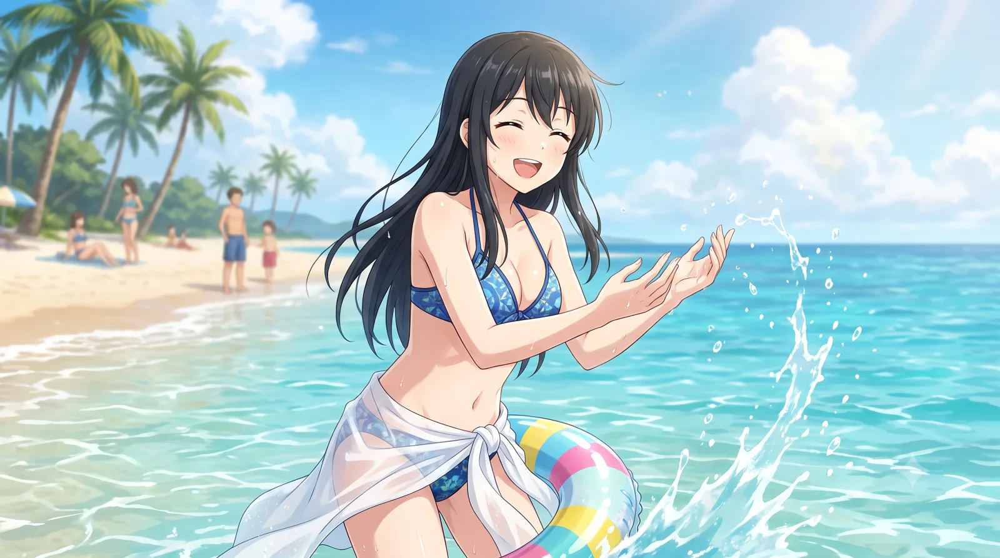
직장인의 눈물겨운 여름휴가포상 휴가를 받아 바다로 떠난 모습. 유니폼 속에 봉인되어 있던 D컵의 실전 압축 몸매가 공개되며 하루빈을 경악하게 만든 장본인이다. 하지만 뒤에서 걸려 올지도 모르는 부장님의 업무 전화 때문에 활짝 웃는 표정 뒤로 은은한 불안감이 서려 있다.
-
5남매 샌드위치 & 짬처리 본능:
집에서는 첫째의 '심부름 셔틀', 둘째의 '의류 대여소', 막내의 '게임 방송 방해 요소' 등 5남매 중 유일한 셋째로서 '짬처리 전문'의 길을 걸어왔다. 이 덕분에 사회에 나와서도 부서 내의 모든 남는 업무와 곤란한 비품 처리는 무의식적으로 "아, 제가 할게요."라고 받아내는 슬픈 파블로프의 개 상태가 되었다. 심지어 회식 자리에서 남은 소고기나 밑반찬을 락앤락에 야무지게 싸가는 '생존 본능'은 부장님들의 사랑(?)과 직장인들의 눈물을 동시에 자아낸다.
-
전노아를 향한 광신도적 애정:
기가 빨리는 ISFJ 빛나에게 ENFJ 불도저 관종 노아는 피곤한 존재일 것 같지만, 실상은 사내에서 전노아를 가장 열렬히 숭배하는 1호 팬이다. 노아가 기안서를 들고 윗선을 들이받아 빈주 1호선의 낡은 에어컨을 교체해주자, 빛나가 노아의 두 손을 부여잡고 "빛노아 님... 당신은 덕빈권의 유일한 구원자이자 신이십니다..."라며 종교적(?) 신앙심을 고백한 사건은 유명하다. 이후 빛나의 메신저 상태 메시지가 'Noa is my life'로 바뀌어 있었던 것은 덤.
자본주의가 낳은 끔찍한 괴물이자 종교다. -
의외의 코어 팬덤 (K-직장인의 우상):
효빈메트로 유니버스의 다른 캐릭터들은 천재적이거나 비현실적인 면모를 보여주지만, 빛나는 '지옥 같은 야근을 묵묵히 버티는 우리들의 자화상'이라는 점에서 압도적인 코어 팬덤을 형성했다. 전국의 K-직장인들은 그녀를 2D 캐릭터가 아닌 '나를 대변하는 든든한 직장 동지'로 여긴다. 빛나의 생일인 10월 14일에는 빈주역 지하에 "빛나야, 오늘은 제발 칼퇴해!"라는 눈물겨운 응원 전광판이 걸리는 것이 연례 행사가 되었다.
사실은 그 시간에 빛나는 회사에서 결재판 들고 울고 있을 확률이 99%다.
8. 미디어 믹스 및 굿즈
현실적인 직장인의 애환과 훌륭한(?) 피지컬 덕분에 어른 팬들의 지갑을 끊임없이 털어가고 있다.
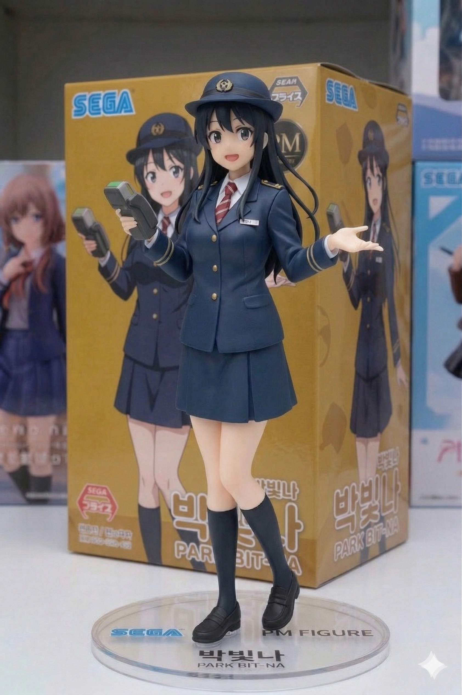
1/7 스케일 피규어결제 단말기를 들고 자본주의 영업 미소를 띠고 있는 조형. 블레이저 단추가 아슬아슬하게 버티고 있는 디테일이 포인트다.
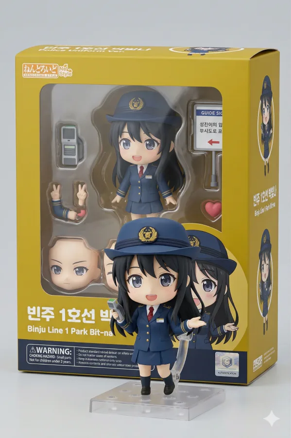
넨도로이드안내 팻말과 결제 단말기가 들어있다. 부장님의 야근 지시에 영혼이 가출한 '다크서클 표정' 파츠가 가장 인기 있다.
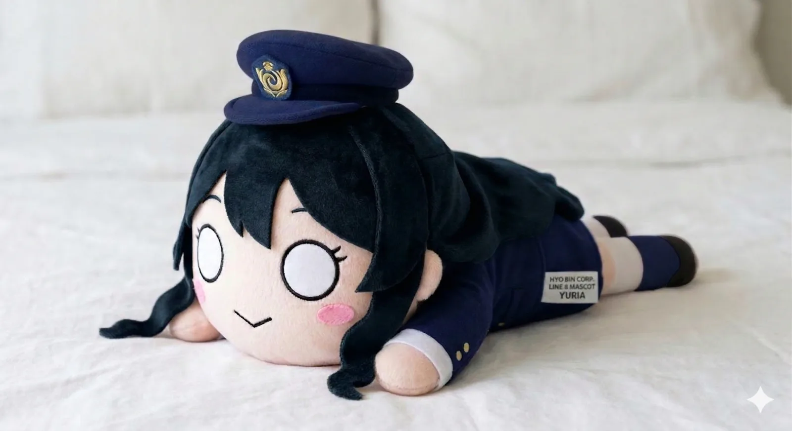
점보 네소베리피곤에 찌들어 침대에 뻗어버린 빛나의 일상을 완벽 재현. 직장인들 사이에서 낮잠용 베개로 불티나게 팔린다.
☕ 빈주 1호선 콜라보 카페 이벤트
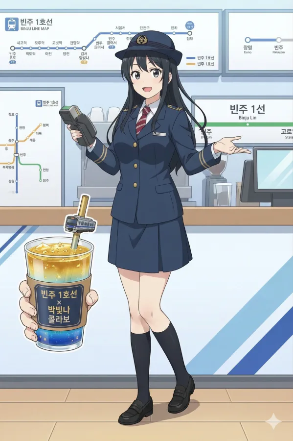
오타쿠 사장(고유현)의 주도로 열린 '빈주 1호선 x 박빛나 콜라보 카페' 특별 비주얼.
금가루가 뿌려진 화려한 테마 음료를 홍보하고 있지만, 정작 빛나의 오른손에는 카페 포스기(결제 단말기)가 들려있다. 이벤트 홍보 모델로 끌려왔으면서 현장 결제 알바까지 투잡을 뛰고 있는 눈물겨운 K-직장인의 현실 고증에 팬들은 오열하며 지갑을 열었다. 빛나: "음료는 8천원입니다. 영수증 필요하신가요?"
🚋 빈주 1호선 공식 래핑 전동차 (내/외부)

열차 외부 래핑
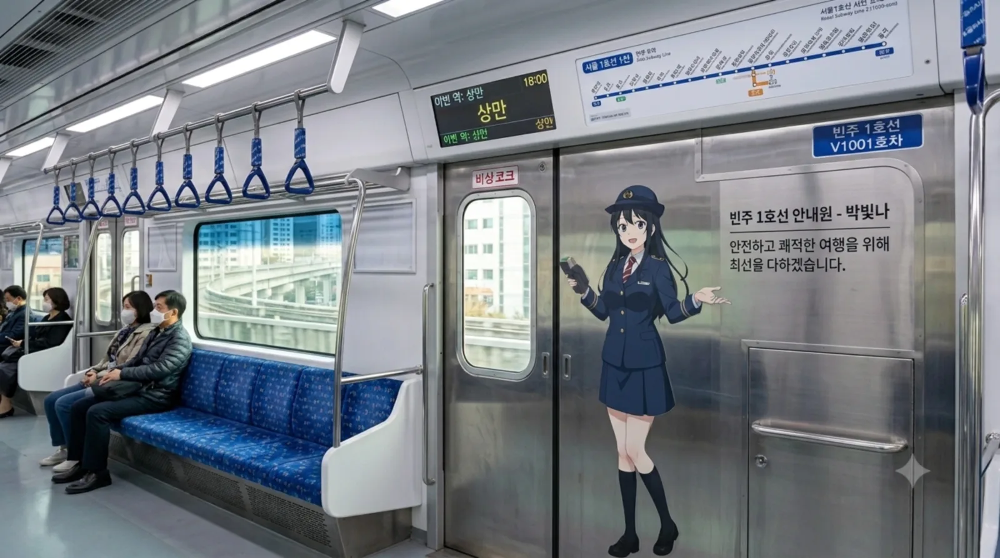
열차 내부 출입문 래핑
빈주 1호선의 노란색 도장 위에 래핑된 박빛나. 외부뿐만 아니라 객실 내부 출입문에도 실물 크기의 래핑이 붙어있다. 매일 아침 지옥철로 출근하는 빛나는 문에 붙어있는 '안전하고 쾌적한 여행을 위해 최선을 다하겠습니다'라는 자신의 해맑은 얼굴을 보며 깊은 현타를 느낀다는 사내 괴담이 존재한다.